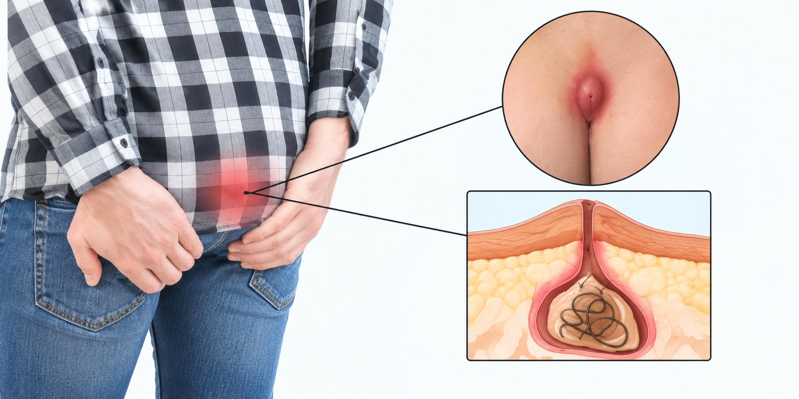

A pilonidal sinus is a small pit or tunnel in the skin at the top of the cleft between the buttocks, over the tailbone. It can stay quiet for years, or it can become painful, swollen and infected.
You may also hear it called a pilonidal cyst or pilonidal disease. When it fills with pus and becomes infected, it is called a pilonidal abscess.
Dr. Pradipkumar Tupere, a proctologist and general surgeon at Navoday Clinic in Kharadi, Pune, examines you first and then explains your options. Treatment may range from simple care and drainage of an abscess to a procedure that removes the sinus.
At a glance
| Topic | In brief |
|---|---|
| What it is | A pit or tunnel in the skin over the tailbone, often with loose hair trapped inside. |
| Common signs | Pain, swelling or discharge at the top of the buttock cleft, and a small pit or opening in the skin. |
| Who gets it | More often young adults, men more than women, and people who sit for long hours or have thick body hair. |
| See a doctor if | You have swelling, pain or discharge near the tailbone, or a swelling that was drained before has come back. |
| Who treats it | A general surgeon. |
| Where | Navoday Clinic, Kharadi, Pune. |
Symptoms of a pilonidal sinus
Many people have no symptoms until the sinus becomes infected.
- A small pit or dimple, sometimes several, in the skin at the top of the buttock cleft.
- Pain, redness and swelling in the area, especially when sitting.
- Pus or blood-stained discharge, sometimes with an unpleasant smell.
- Hair sticking out of the opening.
- With an abscess, a hot, tender swelling and sometimes fever.
See a doctor soon if
- Pain and swelling are severe or spreading, or you have a fever.
- You have diabetes or a weak immune system and notice a painful swelling over the tailbone.
- Discharge keeps coming back, or a swelling that was drained returns.
- A sore over the tailbone has not healed for many weeks.
Pilonidal sinus or anal fistula?
A pilonidal sinus is often mistaken for a boil or for an anal fistula. Position is the clue: a pilonidal sinus lies over the tailbone, while a fistula opens in the skin close to the anus. An examination confirms which one it is.
Why a pilonidal sinus develops
Loose hairs can work their way into the skin of the buttock cleft. The body reacts to them as a foreign object, and a sinus or an abscess can form. Factors that raise the risk include:
- Thick or coarse body hair, and hair that breaks off and falls into the cleft.
- Sitting for long hours, for example at a desk or while driving.
- Friction and sweating in the cleft, and a deep cleft.
- Being overweight.
- A family history of pilonidal sinus.
- Being a young adult, since it is most common between puberty and around age 40.
A pilonidal sinus is not a sign of poor hygiene. Knowing your risk factors helps reduce the chance of it coming back, so Dr. Tupere asks about your routine, your work and hair growth in the area.
How a pilonidal sinus is diagnosed
Diagnosis is usually made by looking and examining. Scans are rarely needed.
01
Your history
Dr. Tupere asks when the swelling began, how many times it has burst or been drained, how long you sit each day and whether anyone in your family has had the same problem.
02
Examination
He examines the buttock cleft for pits, openings, hair and tender areas, and checks whether any opening lies close to the anus.
03
Further tests when needed
An ultrasound or MRI scan is occasionally used when a sinus keeps coming back or the diagnosis is unclear.
Pilonidal sinus treatment options, chosen after examination
Treatment depends on whether the sinus is infected, how large it is and whether it has come back. Dr. Tupere advises the right option only after examining you.
Without an operation
If a pilonidal pit causes no symptoms, careful hygiene, removing hair from the area and avoiding long periods of sitting may be enough. Antibiotics, creams and home remedies may ease symptoms for a while, but they do not remove the sinus tract, so a sinus that keeps discharging or coming back usually needs a procedure.
General guide to procedures
| Procedure | How it works | When it is considered |
|---|---|---|
| Incision and drainage | The abscess is opened and the pus is drained, usually as a short procedure. | An infected, swollen sinus. It relieves the infection, and the sinus may need a further procedure later. |
| Minimally invasive pit excision | The pits and the hair-filled tract are removed through small cuts. | Early or mild disease, with smaller wounds. |
| Excision with open healing | The sinus is cut out and the wound is left open to heal from the base. | An established sinus. Healing takes longer. |
| Excision with flap closure | The sinus is removed and the wound is closed with a flap that flattens the cleft. | A larger sinus, or one that has returned. |
| Laser treatment | A laser fibre treats the tract and its lining through a small opening. | Selected sinuses, where this treatment is available and clinically suitable. |
Reducing the chance of a return
A pilonidal sinus can come back after any procedure. Keeping the area clean and free of loose hair, using hair removal as advised, and avoiding long periods of sitting may help lower the chance.
Each option has its own suitability, risks, recovery and chance of coming back, which Dr. Tupere explains before you decide.
Consult Dr. Pradipkumar Tupere for a pilonidal sinus
Dr. Pradipkumar Tupere is a proctologist and general surgeon with an MBBS and an MS in General Surgery. As a general surgeon, he can assess abscesses and sinuses around the anus and the tailbone and recommend appropriate treatment.
What to expect at your visit
- Book: Call, message on WhatsApp or use the form. We confirm your appointment slot. If the area is swollen and very painful, tell us so we can see you sooner.
- Bring: Any earlier reports, notes on earlier drainage or treatment, a list of the medicines you take and your questions.
- Consultation and examination: Dr. Tupere listens to your symptoms and examines the affected area to understand the condition.
- Your plan: He explains your diagnosis and your options. An abscess may need drainage first, and not every visit leads to an operation.
If a procedure is advised: You are guided through preparation, the procedure and recovery. The wound may need regular dressings, and the area is kept clean and free of loose hair while it heals. Healing can take from a few weeks to a few months, depending on the procedure.
Pilonidal sinus: frequently asked questions
The terms are often used for the same problem. A pilonidal sinus is a small pit or tunnel in the skin over the tailbone, a cyst is a pocket that can form beneath it, and an abscess is the infected, pus-filled stage. Doctors group them together as pilonidal disease.
A quiet sinus may cause no trouble for years. A sinus that has become infected or keeps discharging seldom settles for good without treatment, and an abscess usually needs drainage.
Good hygiene, hair removal and avoiding long periods of sitting can help a mild or symptom-free sinus. Antibiotics and creams may ease an infection for a time, but they do not remove the sinus tract, and a sinus that keeps coming back usually needs a procedure. Dr. Tupere advises after examining you.
Loose hairs work into the skin of the buttock cleft, and the body reacts to them. Thick hair, long sitting hours, sweating, a deep cleft and a family history raise the risk. It is not caused by poor hygiene.
No. A pilonidal sinus lies over the tailbone, while an anal fistula opens in the skin close to the anus, and a boil is a skin infection. A pilonidal abscess and a boil can look alike, so an examination matters.
Several are used, including removal of the pits through small cuts, excision with the wound left open, and excision with a flap that flattens the cleft. The choice depends on the size of the sinus, whether it is infected and whether it has come back. Dr. Tupere explains the options that suit you.
Yes, it can come back after any procedure. The chance depends on the procedure and on aftercare, such as keeping the area clean and free of loose hair. Dr. Tupere explains the chance of it coming back for each option.
Recovery depends on the procedure. Wounds left open take longer to heal than closed wounds or small cuts, and healing can take from a few weeks to a few months.
The cost depends on the size of the sinus, whether it is infected, the procedure chosen, the type of anaesthesia and the facility used. A fixed price cannot be given before an examination, so Dr. Tupere explains the plan and the expected cost at your consultation.
You can consult Dr. Pradipkumar Tupere, a proctologist and general surgeon at Navoday Clinic, Kharadi, Pune, for pilonidal sinus evaluation and appropriate treatment guidance.